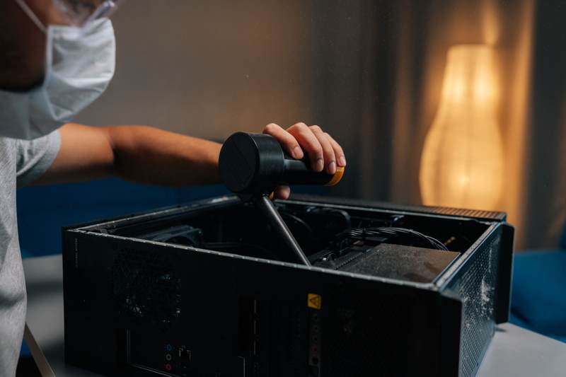

Understanding the Impact of Cold Weather on Your PC
Edmonton's harsh winters can present unique challenges for maintaining your PC. Cold temperatures can affect the performance and longevity of your computer, leading to potential hardware issues. Understanding these challenges is the first step in protecting your system.
One of the primary concerns is the impact of cold weather on your PC's internal components. Extreme cold can cause the metal parts to contract, leading to potential damage. Additionally, if your PC is exposed to drastic temperature changes, condensation may form, which could harm the internal electronics.
Keep Your PC in a Stable Environment
Maintaining a stable environment for your PC is crucial. Avoid placing your computer near windows or doors where it may be exposed to cold drafts. Ideally, keep your PC in a room with a consistent temperature.
Utilizing a space heater can help maintain a comfortable room temperature, but be sure not to place it too close to your PC as excessive heat can also cause problems. The goal is to find a balance that keeps your computer at a stable and moderate temperature.
Regular Maintenance and Cleaning
Regular maintenance is essential for keeping your PC running smoothly during the winter months. Dust can accumulate faster in winter due to increased indoor heating, which can lead to overheating.
Make sure to clean the interior of your PC regularly. This involves using compressed air to remove dust from fans, vents, and other components. Keeping your PC clean will help ensure proper airflow and reduce the risk of overheating.

Monitor Your PC’s Temperature
Monitoring your PC’s temperature is a proactive way to catch potential issues early. There are various software tools available that can help you keep track of your computer’s temperature and alert you if it gets too high or too low.
By keeping an eye on temperature readings, you can take immediate action if your system begins to overheat or if it's running too cold, thus preventing damage and ensuring your PC’s longevity.
Backup Important Data
Backing up your important data is always a good practice, especially during harsh weather conditions when the risk of hardware failure might be higher. Use external drives or cloud storage solutions to keep your data safe and accessible.
Regular backups ensure that you won't lose valuable information in the event of a system failure caused by environmental factors.
Invest in Quality Surge Protectors
Power outages and surges can occur more frequently during intense winter storms. Investing in a quality surge protector can safeguard your PC from unexpected power spikes that could damage your system.
Consider using an uninterruptible power supply (UPS) for even better protection, allowing you to safely shut down your PC during a power outage.
Conclusion
By following these expert tips, you can effectively maintain your PC during Edmonton's harsh winters. Keeping your system in a stable environment, performing regular maintenance, monitoring temperatures, backing up data, and using surge protectors are all crucial steps.
With these strategies, you can enjoy peace of mind knowing your PC is well-protected against the challenges posed by the cold weather.